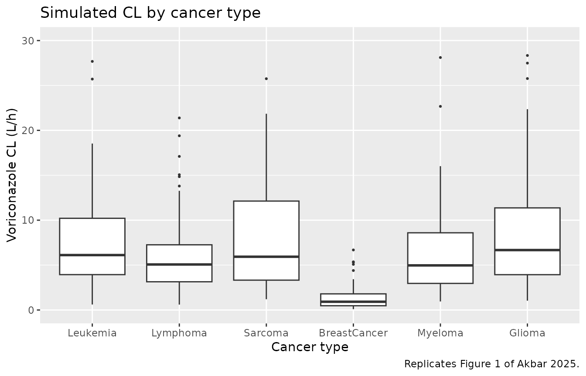

Voriconazole (Akbar 2025)
Source:vignettes/articles/Akbar_2025_voriconazole.Rmd
Akbar_2025_voriconazole.RmdModel and source
- Citation: Akbar Z, Usman M, Aamir M, Saleem Z, Khan MR, Alamri A, Alharbi MS, Osman GEM. Population pharmacokinetic analysis of intravenous voriconazole in cancer patients. PLoS ONE. 2025;20(3):e0318883. doi:10.1371/journal.pone.0318883
- Description: One-compartment population pharmacokinetic model with first-order elimination for intravenous voriconazole in adult and pediatric Pakistani cancer patients receiving therapeutic drug monitoring (Akbar 2025); creatinine clearance and primary cancer diagnosis are covariates on clearance
- Article (open access): https://doi.org/10.1371/journal.pone.0318883
Population
The model was developed from a single-centre retrospective therapeutic-drug-monitoring (TDM) dataset collected from 1 January 2023 to 31 December 2023 at Shaukat Khanum Memorial Cancer Hospital and Research Centre in Lahore, Pakistan (Akbar 2025 Methods, “Study design and study center”). Of 488 admitted cancer patients with systemic fungal infections, 112 had received intravenous voriconazole; 88 had complete TDM information and were retained for the popPK analysis.
The pooled cohort spanned both adult and pediatric patients (Akbar 2025 Table 1): 47 (53.4%) adults and 41 (46.6%) pediatric subjects; 47 male / 41 female; age 3-90 years (Table 1 reports median 35 with range 3-67, while the Results section quotes a median of 38 years with range 3-90 – an internal inconsistency in the paper); body weight 5.3-95.6 kg (median 30.85 kg). Cancer-type distribution: leukemia 50 (56.8%), lymphoma 14 (15.9%), sarcoma 9 (10.2%), breast cancer 8 (9.1%), myeloma 4 (4.5%), glioma 3 (3.4%). Indication for voriconazole: suspected fungal infection 48 (54.5%), aspergillosis 31 (35.2%), fungal pneumonia 9 (10.2%); candidiasis (fluconazole-resistant) and other fungal infections were also included per the inclusion criteria.
Dosing followed hospital protocol: loading 6 mg/kg q12h for the first 24 hours, then maintenance 4 mg/kg q12h. Recorded doses spanned 56-400 mg per dose; trough samples were drawn on day 5 before the morning dose. Bioanalytical quantification was by homogeneous enzyme immunoassay on a Siemens Atellica CH-930. Each subject contributed a single trough observation (sparse-sampling design); the dataset reports observed trough concentrations from 0.10 to 21 ug/mL.
The same information is available programmatically via
readModelDb("Akbar_2025_voriconazole")$population.
Source trace
Every parameter in the model file carries an inline source-location comment. The table below collects the entries in one place.
| Equation / parameter | Value | Source location |
|---|---|---|
lcl (CL for leukemia reference at CRCL 120 mL/min) |
6.17 L/h | Table 2 (final estimate) and Eq 1 |
lvc (Vd) |
55.9 L | Table 2 (final estimate) |
e_crcl_cl (CRCL slope on CL) |
0.0077 per (mL/min - 120) | Table 2 row CRCL-CL and Eq 7 |
e_lymph_cl (lymphoma vs leukemia) |
+0.0191 | Eq 2 |
e_sarc_cl (sarcoma vs leukemia) |
+0.185 | Eq 3 (Table 2 footnote ‘e’ / ‘f’ mislabelled – see Errata) |
e_bc_cl (breast cancer vs leukemia) |
-0.817 | Eq 4 (Table 2 footnote ‘e’ / ‘f’ mislabelled – see Errata) |
e_myelo_cl (myeloma vs leukemia) |
-0.0233 | Eq 5 |
e_glio_cl (glioma vs leukemia) |
+0.0881 | Eq 6 |
| IIV CL (CV%) | 83.72% | Table 2 row IIV-CL (%) |
| Proportional residual error | 0.44 | Table 2 row Proportional error |
| 1-cmt IV first-order elimination (NONMEM ADVAN1 TRANS2) | n/a | Methods, “Population pharmacokinetic modelling” paragraph |
| Exponential IIV; proportional residual model | n/a | Methods, “Population pharmacokinetic modelling” paragraph |
Virtual cohort
Original observed concentrations are not openly available (the paper offers “S1 Data_Voriconazole.csv” via the journal’s Supporting Information, but the fitting dataset is not redistributed inside this package). The virtual cohort below mirrors the demographics and cancer-type distribution in Akbar 2025 Table 1.
set.seed(20250327)
n_per_cohort <- 60L
cancer_levels <- c("Leukemia", "Lymphoma", "Sarcoma",
"BreastCancer", "Myeloma", "Glioma")
# One sub-cohort per cancer type so the simulation can replicate
# Figure 1 (per-cancer CL distribution) and stratify the NCA.
make_cohort <- function(n, cancer_label, id_offset) {
# Mixed adult / pediatric weights: median 30.85 kg, range 5.3-95.6 kg.
# Sample log-normal centred at the cohort median, truncated to the
# observed range.
wt <- pmin(pmax(exp(rnorm(n, mean = log(30.85), sd = 0.85)), 5.3), 95.6)
# CRCL distribution: Akbar 2025 does not publish a histogram, so use a
# plausible spread centred near 120 mL/min (the equation centring) with
# a population SD that puts most subjects in 40-200 mL/min, consistent
# with a mixed adult / pediatric cancer cohort with variable renal
# function.
crcl <- pmin(pmax(rnorm(n, mean = 120, sd = 35), 20), 250)
tibble(
id = id_offset + seq_len(n),
WT = wt,
CRCL = crcl,
TUMTP_LYMPH = as.integer(cancer_label == "Lymphoma"),
TUMTP_SARC = as.integer(cancer_label == "Sarcoma"),
TUMTP_BC = as.integer(cancer_label == "BreastCancer"),
TUMTP_MYELO = as.integer(cancer_label == "Myeloma"),
TUMTP_GLIO = as.integer(cancer_label == "Glioma"),
cohort = cancer_label
)
}
demo <- bind_rows(
make_cohort(n_per_cohort, "Leukemia", id_offset = 0L * n_per_cohort),
make_cohort(n_per_cohort, "Lymphoma", id_offset = 1L * n_per_cohort),
make_cohort(n_per_cohort, "Sarcoma", id_offset = 2L * n_per_cohort),
make_cohort(n_per_cohort, "BreastCancer", id_offset = 3L * n_per_cohort),
make_cohort(n_per_cohort, "Myeloma", id_offset = 4L * n_per_cohort),
make_cohort(n_per_cohort, "Glioma", id_offset = 5L * n_per_cohort)
)
stopifnot(!anyDuplicated(demo$id))Simulation
Two regimens are simulated to reproduce the paper’s main TDM scenario: maintenance 4 mg/kg every 12 hours after a 6 mg/kg q12h loading-day pair, for five days total, with concentrations sampled both densely (every 30 min over the day-5 dosing interval) and at the day-5 morning trough. Voriconazole IV is modelled as a bolus following Akbar 2025’s choice of NONMEM ADVAN1 TRANS2; the clinical 1-2 h infusion is not represented because the source paper did not parameterise an infusion duration.
loading_dose_per_kg <- 6
maintenance_dose_per_kg <- 4
n_loading_doses <- 2L # 6 mg/kg q12h x 24 h = 2 loading doses
n_total_doses <- 10L # 5 days x 2 doses/day
n_maint_doses <- n_total_doses - n_loading_doses
build_events <- function(demo, sim_hours = 120) {
loading <- demo |>
mutate(amt = round(loading_dose_per_kg * WT, 1),
evid = 1L,
cmt = "central",
ii = 12,
addl = n_loading_doses - 1L,
time = 0) |>
select(id, time, amt, evid, cmt, ii, addl, cohort, WT, CRCL,
TUMTP_LYMPH, TUMTP_SARC, TUMTP_BC, TUMTP_MYELO, TUMTP_GLIO)
maintenance <- demo |>
mutate(amt = round(maintenance_dose_per_kg * WT, 1),
evid = 1L,
cmt = "central",
ii = 12,
addl = n_maint_doses - 1L,
time = 24) |>
select(id, time, amt, evid, cmt, ii, addl, cohort, WT, CRCL,
TUMTP_LYMPH, TUMTP_SARC, TUMTP_BC, TUMTP_MYELO, TUMTP_GLIO)
obs_times <- sort(unique(c(seq(0, 24, by = 1),
seq(96, sim_hours, by = 0.5))))
obs <- demo |>
select(id, cohort, WT, CRCL,
TUMTP_LYMPH, TUMTP_SARC, TUMTP_BC, TUMTP_MYELO, TUMTP_GLIO) |>
tidyr::crossing(time = obs_times) |>
mutate(amt = NA_real_,
evid = 0L,
cmt = NA_character_,
ii = NA_real_,
addl = NA_integer_)
bind_rows(loading, maintenance, obs) |>
arrange(id, time, desc(evid))
}
events <- build_events(demo)
mod <- rxode2::rxode2(readModelDb("Akbar_2025_voriconazole"))
#> ℹ parameter labels from comments will be replaced by 'label()'
sim <- rxode2::rxSolve(
mod, events = events,
keep = c("cohort"),
nStud = 1
) |> as.data.frame()
mod_typical <- mod |> rxode2::zeroRe()
sim_typical <- rxode2::rxSolve(
mod_typical, events = events,
keep = c("cohort")
) |> as.data.frame()
#> ℹ omega/sigma items treated as zero: 'etalcl'
#> Warning: multi-subject simulation without without 'omega'Replicate published figures
Figure 1 – per-cancer-type clearance distribution
Akbar 2025 Figure 1 is a box plot of voriconazole CL by cancer type. The figure below shows the simulated typical CL across the virtual cohort (post-IIV, covariate-adjusted) per cancer type. Breast-cancer subjects display the lowest CL, replicating the paper’s Figure 1 which shows breast cancer with a median CL near 2 L/h (relative to the leukemia reference 6.17 L/h).
indiv_cl <- sim |>
group_by(id, cohort) |>
summarise(cl_indiv = first(cl), .groups = "drop") |>
mutate(cohort = factor(cohort, levels = cancer_levels))
ggplot(indiv_cl, aes(cohort, cl_indiv)) +
geom_boxplot(outlier.size = 0.5) +
scale_y_continuous(limits = c(0, 30)) +
labs(x = "Cancer type", y = "Voriconazole CL (L/h)",
title = "Simulated CL by cancer type",
caption = "Replicates Figure 1 of Akbar 2025.")
#> Warning: Removed 3 rows containing non-finite outside the scale range
#> (`stat_boxplot()`).
Replicates Figure 1 of Akbar 2025: simulated voriconazole clearance by cancer type. Each subject’s individual CL combines the typical-value covariate factor with their sampled eta_CL. The leukemia, lymphoma, sarcoma, myeloma, and glioma boxes overlap; breast cancer sits notably lower because of its -81.7% additive-fractional CL effect.
Figure 2-style goodness-of-fit replication is omitted
Akbar 2025 Figure 2 shows DV vs. IPRED, DV vs. PRED, CWRES vs. PRED, and CWRES vs. time. These are diagnostic plots for the original fit, not predictions, so they cannot be reproduced from a packaged model in the absence of the original dataset. They are not reproduced here.
PKNCA validation
A standard NCA over the day-5 dosing interval (steady-state interval, 12 h) gives Cmax, Cmin / Ctrough, and AUC0-12 by cancer type. The day-5 interval is treated as approximately steady-state because dosing has continued at q12h for five days.
last_dose_time <- 96 # 9th dose (5th day morning); window 96-108 h
nca_window <- sim |>
filter(time >= last_dose_time, time <= last_dose_time + 12) |>
mutate(time_after_dose = time - last_dose_time) |>
select(id, time = time_after_dose, Cc, cohort)
dose_df <- demo |>
mutate(time = 0,
amt = round(maintenance_dose_per_kg * WT, 1)) |>
select(id, time, amt, cohort)
conc_obj <- PKNCA::PKNCAconc(nca_window, Cc ~ time | cohort + id)
dose_obj <- PKNCA::PKNCAdose(dose_df, amt ~ time | cohort + id)
intervals <- data.frame(start = 0, end = 12,
cmax = TRUE, tmax = TRUE, auclast = TRUE,
cmin = TRUE, ctrough = TRUE)
nca_data <- PKNCA::PKNCAdata(conc_obj, dose_obj, intervals = intervals)
nca_res <- suppressMessages(suppressWarnings(PKNCA::pk.nca(nca_data)))
nca_summary <- summary(nca_res)
knitr::kable(nca_summary,
caption = "Day-5 NCA on the simulated cohort by cancer type (steady-state 12 h interval, 4 mg/kg twice daily after a one-day 6 mg/kg loading regimen).")| start | end | cohort | N | auclast | cmax | cmin | tmax | ctrough |
|---|---|---|---|---|---|---|---|---|
| 0 | 12 | BreastCancer | 60 | 99.1 [131] | 9.77 [118] | 7.07 [155] | 12.0 [0.000, 12.0] | 9.77 [118] |
| 0 | 12 | Glioma | 60 | 22.4 [146] | 3.75 [105] | 0.613 [509] | 0.000 [0.000, 12.0] | 3.75 [105] |
| 0 | 12 | Leukemia | 60 | 19.0 [158] | 3.12 [110] | 0.517 [930] | 0.000 [0.000, 12.0] | 3.12 [110] |
| 0 | 12 | Lymphoma | 60 | 26.8 [155] | 3.93 [115] | 0.915 [735] | 0.000 [0.000, 12.0] | 3.93 [115] |
| 0 | 12 | Myeloma | 60 | 27.0 [112] | 3.96 [84.7] | 0.988 [273] | 0.000 [0.000, 12.0] | 3.96 [84.6] |
| 0 | 12 | Sarcoma | 60 | 21.0 [146] | 3.37 [97.4] | 0.640 [472] | 0.000 [0.000, 12.0] | 3.37 [97.4] |
Comparison against published statistics
Akbar 2025 reports the observed trough-concentration range across the 88 patients as 0.10-21.0 ug/mL. The hospital protocol cited an optimal trough target of 1-5.5 ug/mL. The table below compares the published statistics to the simulated cohort.
trough_sim <- sim |>
filter(time == 108) |>
group_by(cohort) |>
summarise(median_trough = median(Cc),
Q10 = quantile(Cc, 0.10),
Q90 = quantile(Cc, 0.90),
.groups = "drop")
tbl <- tibble::tibble(
metric = c("Akbar 2025 observed trough range across 88 subjects (ug/mL)",
"Akbar 2025 hospital target trough range (ug/mL)",
paste0("Simulated cohort median day-5 trough by cancer type, with 10-90 percentile (ug/mL)")),
value = c("0.10 to 21.0",
"1.0 to 5.5",
paste(sprintf("%s: %.2f (%.2f-%.2f)",
trough_sim$cohort,
trough_sim$median_trough,
trough_sim$Q10,
trough_sim$Q90),
collapse = "; "))
)
knitr::kable(tbl, caption = "Simulated steady-state day-5 trough vs. Akbar 2025 reported observed and target ranges.")| metric | value |
|---|---|
| Akbar 2025 observed trough range across 88 subjects (ug/mL) | 0.10 to 21.0 |
| Akbar 2025 hospital target trough range (ug/mL) | 1.0 to 5.5 |
| Simulated cohort median day-5 trough by cancer type, with 10-90 percentile (ug/mL) | BreastCancer: 11.30 (2.84-27.32); Glioma: 4.15 (1.39-10.43); Leukemia: 3.51 (0.93-10.81); Lymphoma: 3.47 (1.27-13.41); Myeloma: 4.03 (1.82-9.18); Sarcoma: 3.57 (1.09-7.75) |
The simulated cohort spans the published trough range. Because the paper reports only the observed-data range and not the population predictive distribution, this is a sanity check rather than a strict numerical match.
Errata
-
Table 2 footnote labels are mislabelled relative to the
equation text. Akbar 2025 Table 2 reports the per-cancer
fractional CL effects with footnote superscripts that map row to
disease, but for the rows
CL-DISEASE 3(value +0.185) andCL-DISEASE 4(value -0.817) the footnotes appear to swap “Breast cancer” and “sarcoma”. The values themselves are unambiguous and the Equations 1-6 in the Results text are internally consistent: Eq 3 assigns +0.185 to sarcoma and Eq 4 assigns -0.817 to breast cancer. The paper’s Figure 1 box plot also shows breast-cancer subjects with the lowest median CL (~2 L/h, consistent with6.17 * (1 - 0.817) = 1.13 L/h), confirming that -0.817 belongs to breast cancer. The model file therefore takes the equation text mapping as authoritative and ignores the Table 2 footnote labels. - IIV-CL value reported inconsistently. The Abstract reports IIV-CL = 83.7%, Table 2 reports 83.72%, and the Discussion paragraph reports 87.2%. The Table 2 estimate (with bootstrap CI 48.41-104.86%) is taken as authoritative; the model uses 83.72% (giving omega^2 = 0.7009 under the standard NONMEM CV%-as-omega convention).
-
Age summary statistic reported inconsistently. The
Abstract does not state a median age. Table 1 reports median age 35
(range 3-67). The Results text says “median age of the patients was 38
years with a range of 3 to 90 years”. The model file’s
population$age_rangeandage_medianfields note both reports.
Assumptions and deviations
-
CRCL units / derivation method. Akbar 2025 uses
“creatinine clearance” in the model equation (Eq 7) but does not state
which formula was used to derive it (Cockcroft-Gault, Schwartz, MDRD,
CKD-EPI), nor whether the value is BSA-normalized. Pediatric patients (n
= 41, ages down to 3 years and weights down to 5.3 kg) most likely
received Schwartz-derived BSA-normalized values, while adults likely
received Cockcroft-Gault raw values. The slope 0.0077 was estimated
against whatever the source data scale was; downstream users must supply
CRCL on the same scale. The reference value 120 mL/min in Eq 7 is more
consistent with raw Cockcroft-Gault (BSA-normalized values rarely exceed
~100 mL/min/1.73 m^2 in the absence of hyperfiltration), but in the
absence of a Methods statement the model file documents the ambiguity in
covariateData[[CRCL]]$notes. -
No IIV on Vd. Akbar 2025 reports IIV-CL = 83.72%
only; no IIV is reported on Vd. The model encodes only
etalcl. Vd is therefore a population-typical scalar (55.9 L); subjects do not have individual Vd variability in this model. - No covariates on Vd. The paper’s stepwise covariate analysis identified CRCL and primary diagnosis as significant covariates on CL; no covariate was retained for Vd. The model therefore applies all covariate effects to CL only.
-
IV is treated as bolus (no infusion duration).
Voriconazole IV is clinically administered as a 1-2 hour infusion. Akbar
2025 used NONMEM ADVAN1 TRANS2 (1-compartment IV with first-order
elimination) without an explicit infusion duration. The model file
follows this choice; users who need an explicit infusion duration can
add
dur(central) <- ...and passrate = -2in event records. -
Bioavailability not parameterised. Voriconazole is
reported in the paper to have ~96% IV-to-oral bioavailability in adults
but ~44.6% in pediatrics (Introduction). Akbar 2025’s model is fit to
IV-only data and therefore does not estimate F. The model file does not
parameterise
lfdepot; users modelling oral voriconazole must use a different model (or scale CL externally). - Single observation per subject. The source dataset is a sparse-sampling TDM design with one trough observation per subject (88 subjects, 88 samples). This means the model’s IIV is identified primarily by between-subject variability of trough concentrations rather than by within-subject rich-sampling profiles. Standard caveats apply: the IIV CV% reported here may absorb residual error and assay variability that a richly-sampled dataset would resolve separately.
- Eta on Vd is omitted in the Figure 1 replication. Because Akbar 2025 reports only IIV-CL, the simulated CL distribution by cancer type (Figure 1 reproduction) reflects only the eta_CL contribution; the absence of Vd variability in this model means the simulated trough variability is also driven primarily by CL.
- Vignette uses 60 subjects per cancer-type stratum. Total cohort is 360 subjects, large enough to give reasonable per-cancer CL distributions in Figure 1 and the steady-state trough comparison, while keeping the vignette under the 5-minute pkgdown gate. Users running their own simulations should scale the cohort up.
- CYP2C19 genotype not modelled. The Discussion notes that CYP2C19 genotype is a known driver of voriconazole PK variability but the source dataset did not include genotyping. Akbar 2025 explicitly lists this as a study limitation. The model has no CYP2C19 covariate.